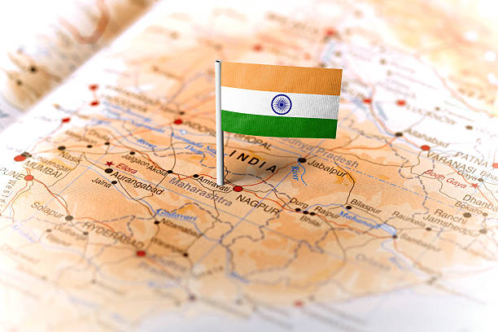
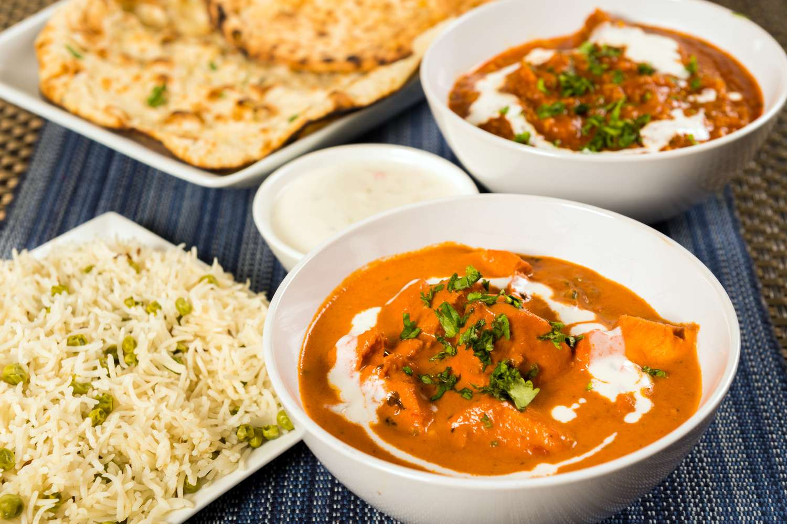
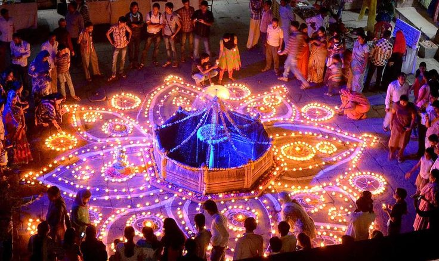
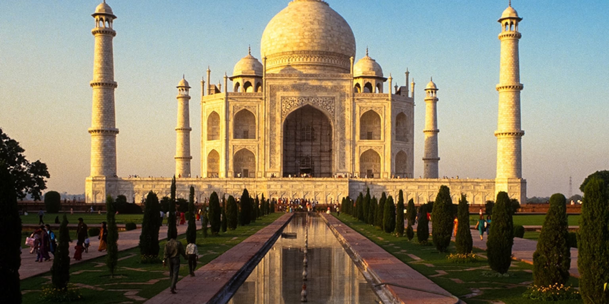
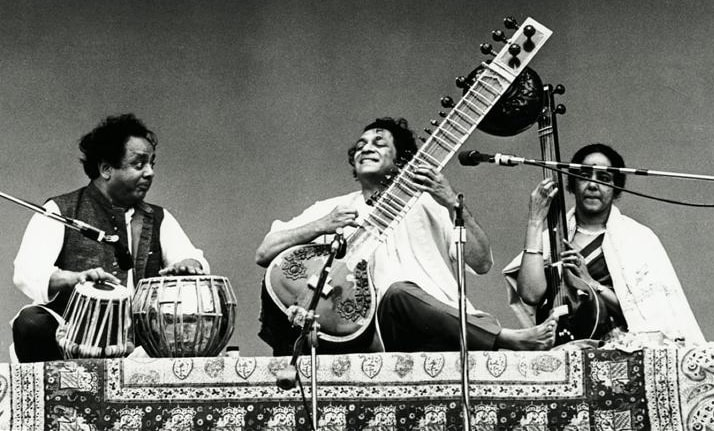

Overview
India, the seventh-largest country in the world, is renowned for its diverse culture, ancient history, and breathtaking landscapes. Known as the land of spirituality, India offers an unparalleled blend of modernity and tradition. From the Himalayas in the north to the beaches of Kerala in the south, India is a treasure trove of experiences.
Food
Indian cuisine is a symphony of spices and flavors, offering a wide variety of dishes. Popular delicacies include Biryani, a flavorful rice dish; Butter chicken, a creamy tomato-based curry; and samosas, crispy fried snacks filled with spiced potatoes. Don’t miss desserts like gulab jamun and jalebi!
Festivals
Festivals in India are colorful celebrations of its rich heritage and spirituality. Major festivals include Diwali (Festival of Lights), Holi (Festival of Colors), and Onam. These events are marked by vibrant decorations, traditional music, dance, and delicious feasts.
History
India has a history stretching back over 5,000 years, marked by the rise of great civilizations like the Indus Valley and Maurya Empires. It has been shaped by a myriad of dynasties, from the Mughals to the British Raj. Iconic landmarks like the Taj Mahal, Qutub Minar, and Ajanta Caves bear testimony to India’s rich historical legacy.
Music
Indian music is a blend of traditional and modern genres. Classical forms like Hindustani and Carnatic music have been passed down for centuries. Instruments such as the sitar, tabla, and veena are central to Indian music. Bollywood music, with its catchy melodies and energetic beats, is globally popular.